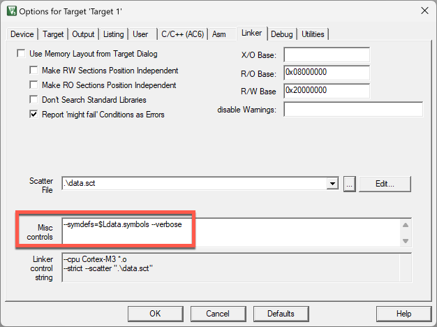

Import a Keil µVision project
With the CMSIS Solution extension, you can convert a Keil μVision project to a CMSIS solution.
-
Open the folder that contains the
*.uvprojxthat you want to convert in VS Code. Alternatively, import a μVision project from keil.arm.com, or clone a project from GitHub. -
Do one of the following:
-
From the Explorer view, right-click the
*.uvprojxfile and select Convert μVision project to CMSIS solution. -
Alternatively, if you are starting from an empty workspace, you can click
 in the
Activity Bar to open the CMSIS view. Then choose one of the following options:
in the
Activity Bar to open the CMSIS view. Then choose one of the following options:-
Click Convert a μVision Project to CMSIS Solution and open your
*.uvprojxfile to convert it. -
Click Views and More Actions
 , then select Convert μVision project to CMSIS solution and open your
, then select Convert μVision project to CMSIS solution and open your *.uvprojxfile to convert it.
-
A dialog box displays. You can carry out the following tasks:
- Open the solution in a new workspace with the **Open** option.
- Open the solution in a new window and new workspace with the **Open project in new window** option.
You can also run the CMSIS: Convert μVision project to CMSIS solution command from the Command Palette. In that case, select the *.uvprojx that you want to convert on your machine and click Select.
If a *.csolution.yml file already exists in the same folder as the *.uvprojx file, then a pop-up message displays in the bottom right-hand corner. Click Overwrite to overwrite the existing file. The conversion starts immediately.
-
Confirm that the Arm Tools Environment Manager extension can automatically activate the workspace and download the tools specified in your
vcpkg-configuration.jsonfile. -
Check the Output tab. If there are any conversion errors and warnings, they display in the CMSIS Solution category. You can also check the
uv2csolution.logfile.
The *.cproject.yml and *.csolution.yml files are available in the folder where the *.uvprojx is stored.
Caveats
Depending on how your µVision project is written, the conversion may encounter problems. The following is a (non-exhaustive) list of issues you might see.
Using Arm Compiler 5
The conversion does not work with Arm Compiler 5-based projects. Only projects using Arm Compiler 6 can be converted.
Workaround
Update an Arm Compiler 5 project to Arm Compiler 6 in Keil μVision, then convert the project to a CMSIS solution in VS Code.
Note
For more information, see the Migrate Arm Compiler 5 to Arm Compiler 6 application note and the Arm Compiler for Embedded Migration and Compatibility Guide.
Using dollar sign in linker misc controls
In µVision, you can use the dollar sign ($) for Linker misc options in the Options for Target dialog:

Attention
Using this will cause a malformed YML access sequence in the generated cproject.yml file that will fail subsequent builds.
Using dots in project file names
In µVision project names, you can use the dot, e.g. MyProjeckt_1.0.vuprojx. In CMSIS solution project format, dots are used to separate project names, build type, and target types (refer to Context).
Attention
Using dots in project names will lead to "error csolution: schema check failed, verify syntax".
Project located in paths containing a dollar sign
In some operating systems, paths can contain the dollar ($) sign. Try avoiding the $ sing in path names as this will
cause build to fail. A workaround is available (see below).
Attention
Building the project will fail with a similar message:
error csolution: malformed access sequence: '/$test/Blinky_FRDM-K32L3A6
Workaround
Use the -O option to redirect all output to a directory without the $ sign.
Component mismatches when using generators
Older projects using GPDSC-based generators will see an issue after the conversion. In the original uvprojx file, an entry for STM32CubeMX could look like this:
<component Cclass="Device" Cgroup="STM32Cube Framework" Csub="STM32CubeMX" Cvendor="Keil" Cversion="1.1.0" condition="STCubeMX" generated="1" generator="STM32CubeMX">
<package name="FrameworkCubeMX" schemaVersion="1.0" url="project-path" vendor="Keil" version="1.0.0"/>
<targetInfos>
<targetInfo name="nucleo"/>
</targetInfos>
</component>
Modern DFPs with generator support would look like:
<component Capiversion="1.0.0" Cclass="Device" Cgroup="STM32Cube Framework" Csub="STM32CubeMX" Cvendor="Keil" Cversion="1.0.0" condition="STM32H7_SC" generator="STM32CubeMX">
<package name="STM32H7xx_DFP" schemaVersion="1.6.3" url="http://www.keil.com/pack/" vendor="Keil" version="2.7.0"/>
<targetInfos>
<targetInfo name="nucleo"/>
</targetInfos>
</component>
Attention
uv2csolution adds a non-existing pack node Keil::FrameworkCubeMX@^1.0.0 which will lead to an error like this:
error csolution: required pack: Keil::FrameworkCubeMX@^1.0.0 not installed
Workaround
Delete the corresponding line from the cproject.yml file.